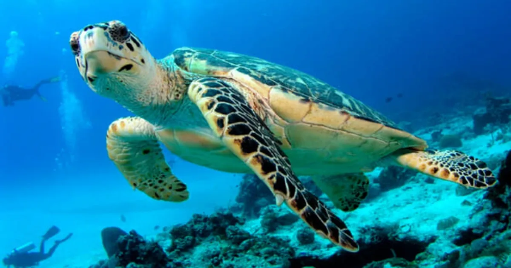

Los japoneses siempre han gustado el pescado freco. Pero las aguas a Japón no han
tenido muchos peces por décadas.
Así que para alimentar a la poblacion japonesa, los barcos
pesqueros fueron fabricados más grandes para ir mas adentro.
Mientras más lejos iban los pescadores, más era el tiempo que les tomaba regresar a entregar el pescado. Si el viaje tomaba varios días, el pescado ya no estaba fresco.
Para resolver el problema, las compañías instalaron congeladores em los barcos pesqueros. Así podrían pescar y poner los pescados en los congeladores. Sin embargo, los japoneses pudieron percibir la diferencia entre el pescado congelado y el fresco y no les gustaba el congelado; por lo tanto, teníanque venderlo más barato.
Para mantener el sabor fresco de los peces, las compañías pesqueras ponen dentro de los tanques en los botes, pero ahora ponen también un ¡tiburón pequeño!
Claro que el tiburón se come algunos peces, pero los demás llegan muy, pero muy vivos. ¡Los peces son desafinados! Tienen que nadar durente todo el trayecto dentro del tanque, para mantenerse vivos,
Cuando alcances tus metas proponte otras mayores. Nunca debes de crear el éxito para luego acostarse en él.
Asíque invita a un "Tiburón a tu tanque" y descubre qué tan lejos realmente puedes llegar
Unos cuantos "tiburones" te harán conocer tu potencial, que no te asusten sus "dientesni sus trampas", tú sigue alerta, pero siempre "fresco".
Siempre habrá tiburones a donde vayas.
